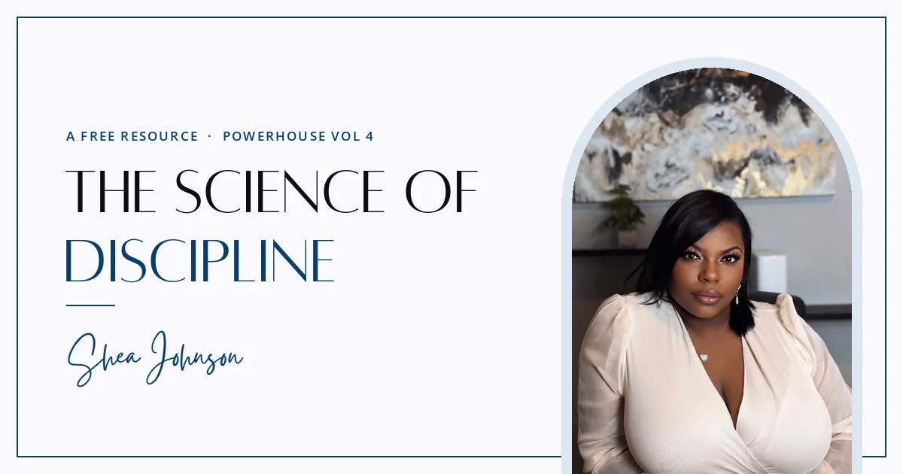
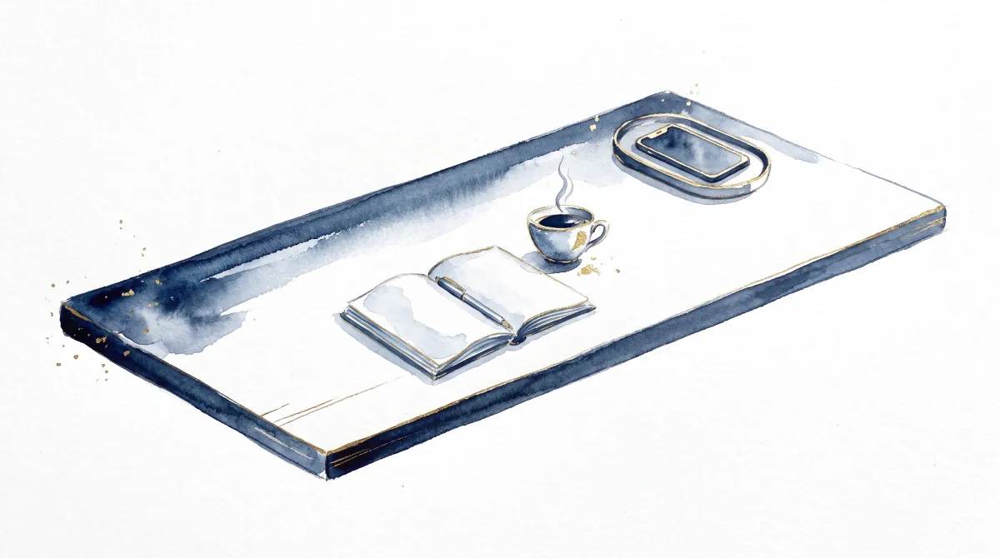
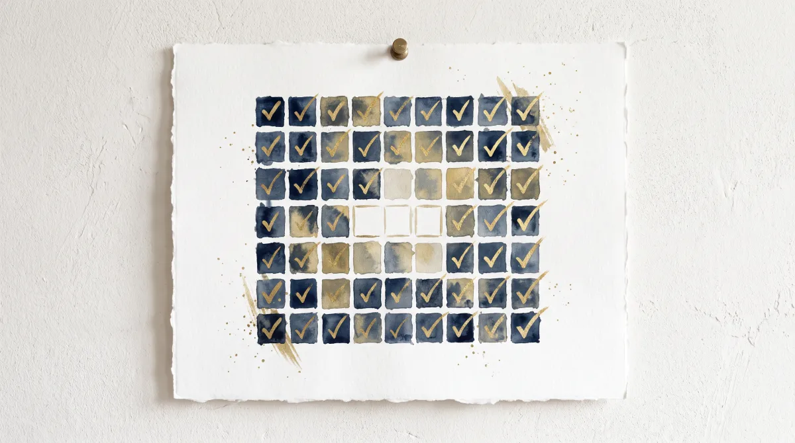
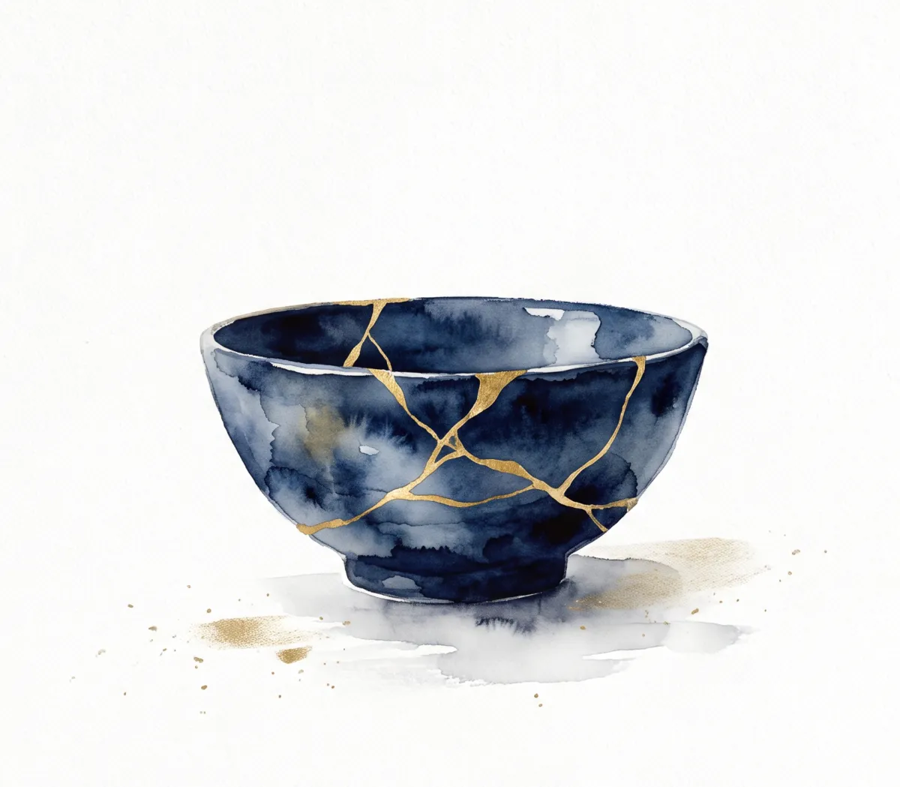

A Note on Transparency
This article was created with the assistance of AI (Claude by Anthropic). The vision, direction, and editorial decisions are mine — but the research synthesis and heavy lifting? That was a true human-AI collaboration. I wrote this piece because I truly wanted to understand the science of discipline for myself, and I’m sharing it because I believe this knowledge can help others too. As someone who teaches entrepreneurs to use AI tools ethically and effectively, I practice what I preach: transparency, authenticity, and using technology to amplify — not replace — human insight and intention.
Section 1: Introduction — Why Willpower Fails
There’s a lie you’ve been told your entire life, and it’s probably ruining your relationship with yourself.
The lie is this: Disciplined people are just better at forcing themselves to do hard things. They have more willpower. More grit. More mental toughness. And if you can’t seem to stick to your goals, post consistently, wake up early, eat healthy, or finish what you start — well, you must just be weaker than they are.
This is not only false. It’s the opposite of what science actually shows.
The most disciplined people on the planet aren’t fighting themselves harder than you. They’re fighting themselves less. They’ve learned — consciously or unconsciously — to design systems, environments, and identities that make the “right” behavior require less effort, not more.
They’re not white-knuckling their way through life. They’ve made the hard thing the easy thing.
This article is going to change how you see it.
What You’ll Learn
Over the next several sections, we’re going to go deep into the neuroscience, psychology, and behavioral research behind discipline and consistency. Not the motivational fluff you find on Instagram. The actual science.
You’ll learn why willpower is a limited resource and what happens in your brain when it runs out. How dopamine really works and why motivation vanishes after you start something. The psychology of identity and why “becoming” someone is more powerful than “doing” something. How tiny environmental changes can dramatically alter your behavior. The neuroscience of habit formation and why it takes way longer than 21 days. When discipline tools aren’t enough — and what’s actually happening in the brain during addiction, ADHD, depression, and trauma. The science of recovery, self-compassion, and why celebrating the return matters more than maintaining the streak.
Section 2: The Neuroscience of Willpower
Let’s start with the thing everyone thinks is the answer: willpower.
Willpower — the ability to resist short-term temptations in pursuit of long-term goals — has been studied extensively by psychologists and neuroscientists. And the findings are clear: willpower is not a character trait. It’s a cognitive resource. And like all resources, it can be depleted.
The Prefrontal Cortex: Your Brain’s Executive
The seat of willpower in the brain is the prefrontal cortex (PFC) — the region right behind your forehead. This is the most recently evolved part of the human brain, and it’s responsible for what psychologists call “executive functions”: planning, decision-making, impulse control, and goal-directed behavior.
But here’s the problem: self-control is demanding work for this part of the brain, and it works noticeably worse when you’re tired, stressed, hungry, or short on sleep. (An older theory said willpower literally runs on blood sugar. Later research didn’t support it, but the practical point still stands: your brain’s self-control works best when you take care of the body it lives in.)
Ego Depletion: The Science
In 1998, psychologist Roy Baumeister and his colleagues conducted a now-famous experiment. They brought hungry participants into a room that smelled of freshly baked cookies. On a table sat a plate of cookies and a bowl of radishes. Some participants were told they could eat the cookies. Others were told they could only eat the radishes — and had to resist the cookies. Afterward, both groups were given an impossible puzzle to solve. (Baumeister et al., 1998)
The result? Participants who had to resist the cookies gave up on the puzzle much faster than those who didn’t. The act of resisting temptation had depleted something — and that something affected their subsequent persistence.
Baumeister called this phenomenon “ego depletion.” The idea was that willpower draws from a limited pool of mental energy, and using it for one task leaves less available for the next.
The Replication Crisis and Nuance
In recent years, ego depletion research has faced significant challenges. A large-scale replication attempt in 2016 failed to reproduce the original effects, leading some researchers to question whether ego depletion is real at all. (Hagger et al., 2016)
The current scientific consensus is more nuanced. Ego depletion effects are probably real, but they’re smaller than originally thought, context-dependent, and influenced by beliefs and motivation.
What This Means for You
First, don’t rely on willpower as your primary strategy. Willpower is real, but it’s unreliable. Second, protect your willpower for what matters most. Make important decisions early in the day, reduce trivial decisions through routines, and don’t schedule difficult tasks after extended periods of self-control. Third, consider your physical state. Sleep, nutrition, and stress all affect prefrontal function. Fourth, don’t use “I’m depleted” as an excuse — mindset matters too.
Section 3: Dopamine — The Real Boss of Motivation
If willpower is the brake pedal of behavior, dopamine is the gas.
Dopamine is probably the most misunderstood neurotransmitter in popular culture. You’ve heard it called the “pleasure chemical” or the “reward molecule.” Most of this is wrong — or at least, dramatically oversimplified.
Dopamine Is About Wanting, Not Liking
The key insight from modern neuroscience is this: dopamine is not about pleasure — it’s about anticipation of pleasure. Dopamine is released not when you receive a reward, but when you expect a reward. It’s the system that makes you want things, not the system that makes you enjoy them.
The Prediction Error Model
Modern research shows that dopamine functions as a “reward prediction error” signal. Your brain is constantly predicting what rewards are coming. When reality matches prediction, dopamine stays baseline. When reality exceeds prediction (unexpected reward), dopamine surges. When reality falls short of prediction, dopamine drops below baseline.
This is why the first bite of cake is amazing but the tenth is meh. This is why unpredictable rewards (like slot machines or social media notifications) are so addictive. This is why achieving a goal often feels anticlimactic — the dopamine was in the pursuit, not the achievement.
Working WITH Dopamine
Create anticipation for beneficial activities. Don’t just schedule a workout — visualize how good you’ll feel after. Add variability to routines. Break large goals into smaller wins. Reduce dopamine competition from high-stimulation activities. Connect tasks to identity — who you believe you are shapes what feels worth doing.
Section 4: The Psychology of Identity and Behavior
There’s a third force at play — one that can override both willpower depletion and dopamine fluctuations. It’s the most powerful lever you have for sustainable behavior change: identity.
Why Behavior-First Approaches Fail
Research published in the Journal of Consumer Research found that people who framed their choices in terms of behavior (“I can’t eat that”) were significantly less successful at resisting temptation than people who framed the same choice in terms of identity (“I don’t eat that”). (Patrick & Hagtvedt, 2012)
“Can’t” implies restriction — something external preventing you from doing what you want. “Don’t” implies identity — this is simply not who you are. There’s no internal conflict, no willpower required, no battle to fight.
James Clear and Identity-Based Habits
Author James Clear, in his bestselling book Atomic Habits, articulated three layers of behavior change: Outcomes (what you want to achieve), Processes (the habits and systems), and Identity (what you believe about yourself). (Clear, 2018)
Clear’s insight was to start from identity: First, decide the type of person you want to become. Then prove it to yourself with small wins.
Section 5: Environment Design — The Science of Friction
Your environment shapes your behavior far more than your intentions, your motivation, or your character. This is the science of friction.

Choice Architecture: The Invisible Hand
In 2008, behavioral economists Richard Thaler and Cass Sunstein published Nudge, demonstrating that the way choices are presented dramatically affects which choices people make. They called this “choice architecture.” (Thaler & Sunstein, 2008)
Examples: Countries where people are organ donors unless they opt out have consent rates near 99% in most cases, versus roughly 4 to 28% in countries where people have to opt in. (Johnson & Goldstein, 2003) Automatic 401(k) enrollment raised participation among new employees from 49% to 86%. (Madrian & Shea, 2001)
The Fogg Behavior Model
Stanford researcher BJ Fogg developed one of the most useful frameworks for understanding how environment affects behavior. His model states that: Behavior = Motivation + Ability + Prompt. (Fogg Behavior Model)
For any behavior to occur, three things must converge at the same moment: sufficient motivation to do it, sufficient ability to do it (low enough friction), and a trigger that prompts the behavior. Fogg teaches that ability (reducing friction) is usually the easier and more effective lever to pull.
Section 6: The Neuroscience of Habit Formation
Habits are the brain’s solution to the problem of limited cognitive resources. Once a behavior becomes habitual, it no longer requires willpower. It just… happens.

The Habit Loop: Cue → Routine → Reward
In his book The Power of Habit, journalist Charles Duhigg popularized a model of habit formation: the “habit loop” with three components — Cue, Routine, and Reward. (Duhigg, 2012)
Automaticity: How Long It Really Takes
You’ve probably heard that it takes 21 days to form a habit. This is a myth. A 2009 study by Phillippa Lally and colleagues at University College London followed 96 people as they tried to form new habits. Among the 39 whose data could be fully analyzed, the typical person (the median) took 66 days for a habit to become automatic. But the range was enormous — from 18 days to 254 days — depending on the person and the complexity of the habit. (Lally et al., 2010)
Breaking Bad Habits
You can’t really “delete” a habit. The neural pathways, once formed, remain in the brain. What you can do is overwrite habits — create a new, stronger pattern that competes with the old one.
Section 7: When Discipline Isn’t the Problem
Sometimes discipline isn’t the problem. Sometimes the brain itself is working differently.
Addiction, ADHD, depression, and trauma are not discipline problems. They are conditions that affect the neurological systems discipline depends on. Treating them as discipline problems — and blaming yourself for failing to “just try harder” — is not only ineffective but harmful.
However, discipline tools can support recovery and management of these conditions. The key is knowing when you need more than discipline.
Section 8: The Science of Recovery and Resilience

Here’s what the science also shows: The brain can change. Recovery is possible. Resilience can be built.
Neuroplasticity: Your Brain Can Change at Any Age
Beginning in the 1990s, neuroscientists documented something remarkable: the adult brain retains significant capacity for change throughout the entire lifespan. They called this capacity neuroplasticity.
Self-Compassion: Why Kindness Beats Criticism
Researcher Kristin Neff at the University of Texas has spent decades studying self-compassion. The research is consistent and striking: Self-compassion is associated with greater emotional resilience, faster recovery from failure, and — counterintuitively — more motivation to improve after a setback. (Neff, Self-Compassion Research)
Why? One leading model (psychologist Paul Gilbert’s) suggests that harsh self-criticism activates the brain’s threat-defense system (the amygdala), which impairs executive function. Self-compassion activates the brain’s “care” system, which calms the nervous system and enables constructive action.
The Fresh Start Effect
Research by Katherine Milkman and colleagues identified the “Fresh Start Effect”: people are more likely to pursue goals immediately after temporal landmarks — beginnings of the week, month, year, or after birthdays and holidays. (Dai, Milkman & Riis, 2014)
The practical implication: You don’t have to wait for January 1st. Any day can be a fresh start.
Section 9: Putting It All Together
The Discipline Equation: Discipline = Decision + Environment + Identity
Decision means pre-committing — making the choice once, in advance. Environment is the total architecture of friction and cues surrounding your behavior. Identity is the deep self-concept that determines what behaviors feel natural versus forced.
Your Personal Experiment
Week 1–2: Audit your foundation, environment, and identity language.
Week 3–4: Address foundation issues and make high-impact environment changes.
Week 5–12: Focus on one keystone habit. Expect automaticity to take 8–10 weeks.
Ongoing: Practice identity language. Celebrate returns, not just streaks.
Section 10: Conclusion — The Truth About Discipline
Truth #1: Discipline is not a trait — it’s a system. The disciplined person has built systems that make good behavior more automatic.
Truth #2: You’re not fighting yourself — you’re working with your brain. When you understand its design, you stop fighting and start collaborating.
Truth #3: The goal is to need less discipline, not more. Sustainable success is about designing systems that require less willpower over time.
Truth #4: Falling off is part of the process. What matters isn’t perfect consistency. It’s the return.
Truth #5: Change is possible — at any age, from any starting point. Neuroplasticity is real. Your brain is not fixed.
The Invitation
Stop trying harder. Start designing smarter. Stop fighting your brain. Start working with it. Stop measuring discipline by perfect streaks. Start measuring it by returns from failure.
You now understand discipline in a way most people never will. You have the science. You have the framework. You have the truth.
What you do with it is up to you. But I believe in you. And the science does too.
References & Further Reading
Key Research Studies
Ego Depletion (Willpower Research):
Baumeister, R. F., Bratslavsky, E., Muraven, M., & Tice, D. M. (1998). Ego depletion: Is the active self a limited resource? Journal of Personality and Social Psychology, 74(5), 1252–1265.
Hagger, M. S., et al. (2016). A multilab preregistered replication of the ego-depletion effect. Perspectives on Psychological Science, 11(4), 546–573.
Choice Architecture (Defaults):
Johnson, E. J., & Goldstein, D. (2003). Do defaults save lives? Science, 302(5649), 1338–1339.
Madrian, B. C., & Shea, D. F. (2001). The power of suggestion: Inertia in 401(k) participation and savings behavior. The Quarterly Journal of Economics, 116(4), 1149–1187.
Habit Formation (66 Days Study):
Lally, P., van Jaarsveld, C. H. M., Potts, H. W. W., & Wardle, J. (2010). How are habits formed: Modelling habit formation in the real world. European Journal of Social Psychology, 40(6), 998–1009.
Self-Compassion Research:
Neff, K. D. (2023). Self-Compassion: Theory, Method, Research, and Intervention. Annual Review of Psychology, 74, 193–218.
Fresh Start Effect:
Dai, H., Milkman, K. L., & Riis, J. (2014). The Fresh Start Effect: Temporal Landmarks Motivate Aspirational Behavior. Management Science, 60(10), 2563–2582.
Fogg Behavior Model:
Fogg, B. J. (2020). Tiny Habits: The Small Changes That Change Everything. Houghton Mifflin Harcourt.
Identity-Based Language (“I Don’t” vs “I Can’t”):
Patrick, V. M., & Hagtvedt, H. (2012). “I Don’t” versus “I Can’t”: When Empowered Refusal Motivates Goal-Directed Behavior. Journal of Consumer Research, 39(2), 371–381.
Recommended Books
Clear, J. (2018). Atomic Habits. Avery.
Duhigg, C. (2012). The Power of Habit. Random House.
Thaler, R. H., & Sunstein, C. R. (2008). Nudge. Yale University Press.
Neff, K. D. (2011). Self-Compassion. William Morrow.
Fogg, B. J. (2020). Tiny Habits. Houghton Mifflin Harcourt.
About the Author
Shea Johnson is an AI Business Coach who specializes in helping entrepreneurs integrate AI tools into their business operations. She helps entrepreneurs move past overwhelm with practical, actionable systems. Her work emphasizes that discipline isn’t about willpower — it’s about systems, identity, and designing a life where good choices become automatic.
Put the science to work…
This article is the research behind Volume 4 of the Powerhouse Entrepreneur Series: Discipline & Consistency.
It’s an AI coaching journey that builds these systems with you, one conversation at a time, and then stays with you as an accountability partner.
— Shea
AI Business Coach | mssheajohnson.com